Aktuálna ponuka
Nehnuteľnosti, ktoré ponúkam
11 nehnuteľností na predaj a prenájom. Vyberte typ, alebo napíšte lokalitu.
11 z 11 ponúk
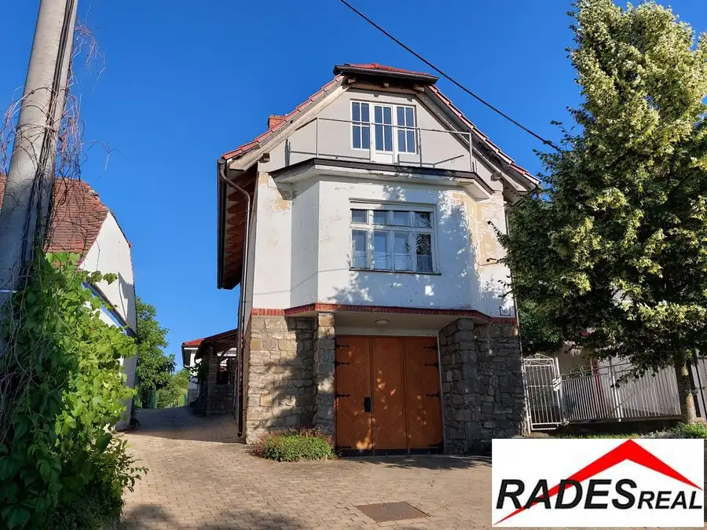
DomNové10 233 000 €Výrazná zľava- vinohradnícka usadlosť v Skalici Skalica 300 m² Vo výhradnom zastúpení majiteľa ponúkame na predaj vinohradnícky dom s rozsiahlym pozemkom situovaný v prostredí skalických vinohradov časť…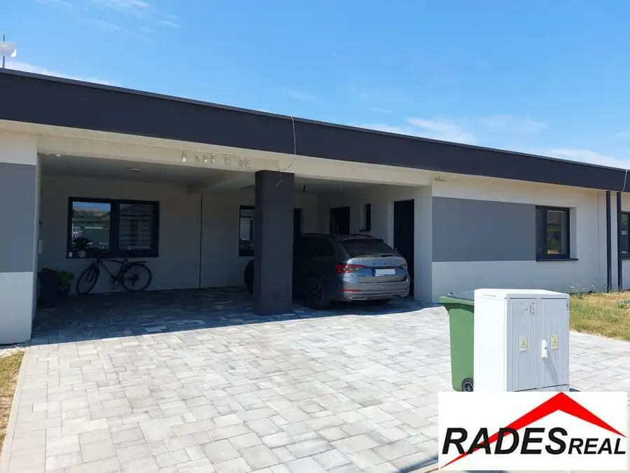
Dom10 190 000 €Výrazná zľava- Na predaj holodom v Oreskom. Oreské 107 m² Moderné rodinné bývanie podľa vašich predstáv – 4-izbová novostavba v obci Oreské.Hľadáte moderné, úsporné bývanie v pokojnej lokalite s výbornou…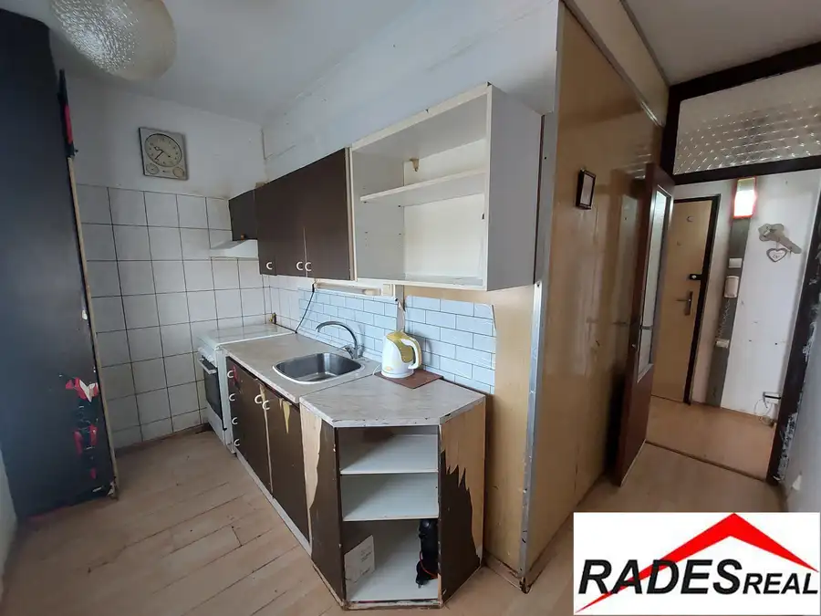
Byt10 79 000 €2-izb. byt v pôvodnom stave v Holíči Holíč 2-izbový48.09 m²5. podlažie Vo výhradnom zastúpení majiteľov Vám ponúkame na predaj 2 izbový byt v pôvodnom stave, situovaný na sídlisku SNP v Holíči, v lokalite s dobrou a…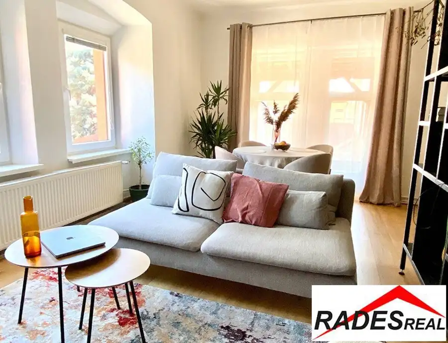
BytNové7 Cena dohodouNa prenájom štúdio s obývacou izbou v Skalici Skalica 1-izbový60 m²1. podlažie Vo výhradnom zastúpení majiteľa Vám ponúkame na krátkodobé ubytovanie moderné štúdio s obývacou izbou pre 2 osoby. Byt je situovaný v širšom centre…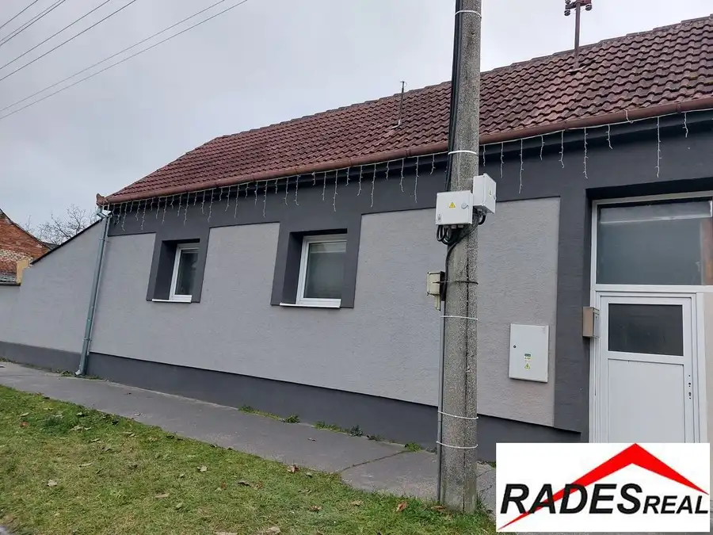
BytNové10 Cena dohodouNa predaj mezonetový byt v Holíči s pozemkom. Holíč 1-izbový120 m²1. podlažie Vo výhradnom zastúpení majiteľa pripravujeme do ponuky na predaj 1-izbový byt v Holíči na ul. Partizánska. Byt je situovaný v radovej zástavbe…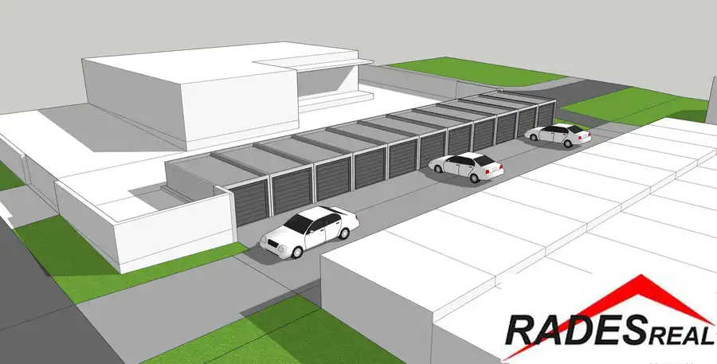
Komerčné priestory6 Cena dohodouNa predaj alebo prenájom prefabrikovaná garáž v Skalici Skalica 18 m² Vo výhradnom zastúpení investora pripravujeme do ponuky prefabrikované garáže, ktoré budú situované na sídlisku SNP v Skalici. Realizácia projektu je…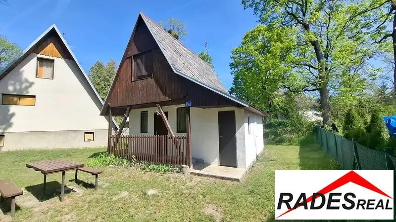
Chalupa, rekreačný domček10 69 000 €Pekná murovaná chatka v rekreačnom stredisku Gazárka v Šaštíne * 40 m2 + pozemok v nájme Šaštín-Stráže 40 m² Rades Real Plus ponúka na predaj útulnú murovanú chatu priamo v rekreačnom stredisku Gazárka v mestečku Šaštín - Stráže. Chata bola čiastočne…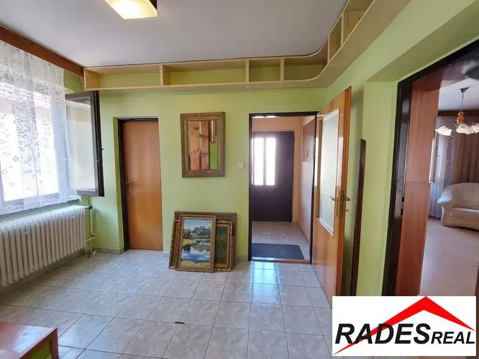
Dom10 235 000 €Dom v širšom centre Skalice Skalica 220 m² Vo výhradnom zastúpení majiteľov ponúkame na predaj samostatne stojaci rodinný dom, situovaný v širšom centre mesta v tichej ul. Nešporova na pozemku…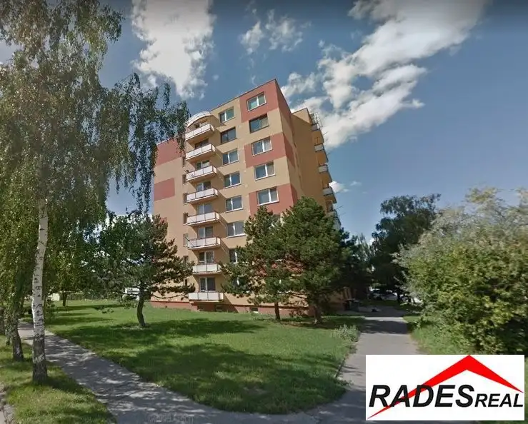
Byt Cena dohodouKúpa -2. izb.bytu v Skalici Skalica 2-izbový Súrne hľadáme pre nášho klienta dvojizbový byt v Skalici. Klient preferuje byt v bytovom dome s výťahom. V prípade nízkeho bytového domu 1.-2.…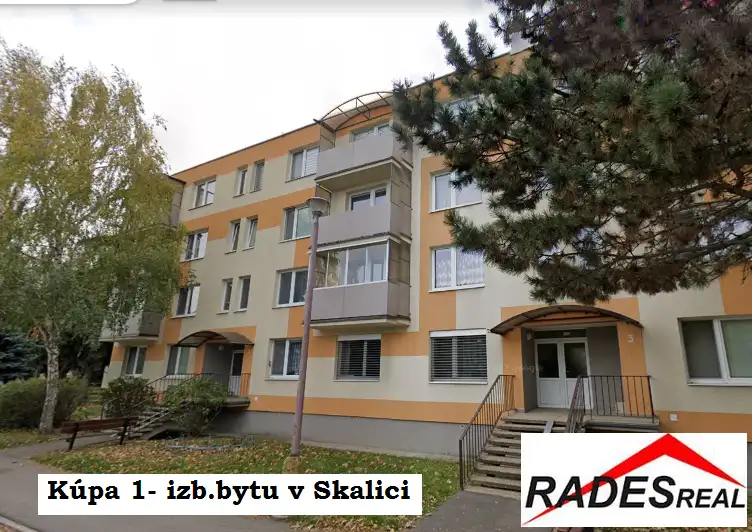
Byt Cena dohodouKúpa 1-izb.bytu v Skalici Skalica 1-izbový Hľadáme pre našu klientku 1- izb.byt v Skalici, podľa možností najlepšie zrekonštruovaný. Prosím ponúknite a predajte Vašu nehnuteľnosť nášmu…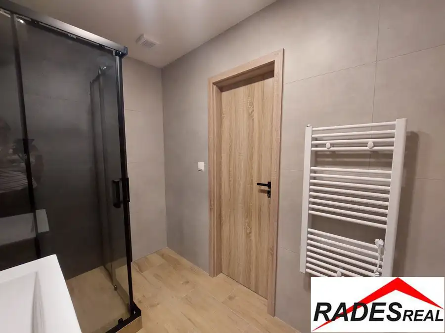
BytRezervované10 144 990 €Novozrekonštruovaný 3- izb.byt v top lokalite v Skalici Skalica 3-izbový75 m²5. podlažie Hľadáte moderné bývanie, kde sa vyhnete stresu zo zdĺhavej prerábky, no zároveň si chcete domov dotvoriť podľa vlastného vkusu? V exkluzívnom…Tomuto výberu zatiaľ nezodpovedá žiadna ponuka. Napíšte mi, čo hľadáte.